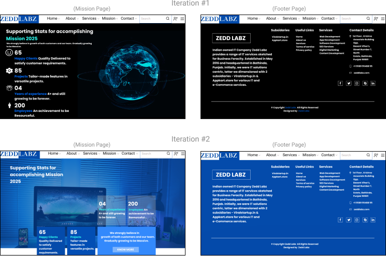

Design Process:
Phases: User Research - Design Strategy - Interaction Design - Wireframing and Prototyping - Testing and Iterating - UI Design
Why the website needs to redesign?
- The previous design of the website looks outdated
- When the user do visit the website for the first time, user might feel the trust building and security issue.
- The homepage section informations were not clearly visible in the previous design.
As the homepage section is the first impression to the user which made up their mind to visit the website further or not.
The Challenge: Zedd Labz a Punjab, India based tech startup company which provides a range of IT services. So in their previous website design didn't match their expectations the informations, So they wanted their website to be redesigned with good color,text and better layouts.
The Approach: A responsive website that clearly communicates Zedd Labz's Services, informs the users what to expect and provides good experience.
Goals:
-
Indentify the target audiences of Zedd Labz Company and their needs, goals, priorities and pain points.
- Design clear information architecture to facilitate key user interactions, including account creation to the website and contact enquiries
- Design a responsive, easy to maintain website that meets user needs and is consistent with existing branding assets and content.
The Design Brief: Prior to this project, Zedd Labz is a IT startup company which did not have an good online presence,So there was no way of potential clients to learn about the business, direct inquiries or read about different services offered. I worked with Zedd Labz to design a responsive, accesible website to promote their brand, increase visibility and to allow their customers to easily go through their services.
Phase 1: User Research
In order to better understand the needs and priorities of potential Zedd Labz customers, I designed and distributed a brief survey to people who had experiences with IT services. I also conducted a competitive analysis of other IT company websites as well to identify common features and content of their websites.
The primary and secondary research generated critial insights into the expectations people have when looking for IT services. The process also helped to clarify the essential information and interactions that we would need to offer on the Zedd Labz website in order to facilitate desirable and successful engagement with current and future clients.
User Personas

Phase 2: Interaction Design
Design Strategy
The research helped clarify the following goals that are mutually shared by Zedd Labz and their target audiences:
- Have a comfortable, trustworthy working relationship between Zedd Labz Team and Client.
- For all involved to Zedd Labz, assure that the client feel safe, affirmed, comfortable and respected before, during and after get in touch.
- To give the client best quality services.
- To have an good online presence which facilitates customer engagement including account creation and contacting to the team.
In addition the research shows that the following interactions would be essential to meeting the goals above:
- Having a good online presence so the customer feels secure.
- Contacting Zedd Labz Team by email or phone.
- Reading about the services online including their accomplishment of successful projects.
Phase 3: Information Architecture: Site Map and User Flows

In the first version of the site map, I aimed for straightforward navigation that met audiences desires for clear information about the company services and clear pathways to contacting the Zedd Labz Team
By Diagramming user flows, I identified key pages that i would need to design, and sketched them with pen and paper. Then I quickly transitioned to designing a high-fidelity, working prototype of the website.
Wireframing and Prototyping
Mockups of Zedd Labz Previous & Redesign Homepage Portion
.png)
Problem: The homepage section informations were not clearly visible in the previous design.
As the homepage section is the first impression to the user which made up their mind to visit the website further or not.
Solution: I have given the homepage section a modern look along with some minor changes with the layout, as well as adding icons and buttons. So that the website informations can get clearly visible to the users.
Previous design of service page
Redesign of service page-Prototype
(P.S. - As the website is still in development process so couldn't able to share rest pages prototype, once it will develop i will attach the website link. Thank you! )
Phase 4: Usability Testing + Iteration
After wireframing and prototyping an initial set of pages, I conducted usability testing in order to identify potential errors and issues that people might encounter when engaging with the prototype. I tested the website with people who did not necessary frequent about IT services in order to better understand the level of clarity of the site content and structure, especially to those people's who are new to, or unfamiliar with IT startup companies services.

Iteration:

Phase 5: Final Design (UI Design)
After several rounds of testing and iteration, i finally came up with the final UI designs.
A completion of UI designs for Zedd Labz redesigned website.